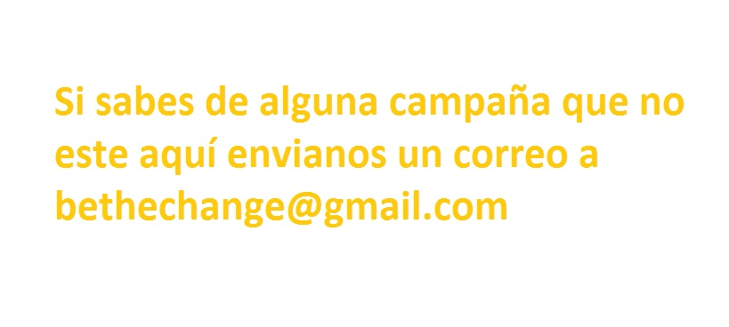
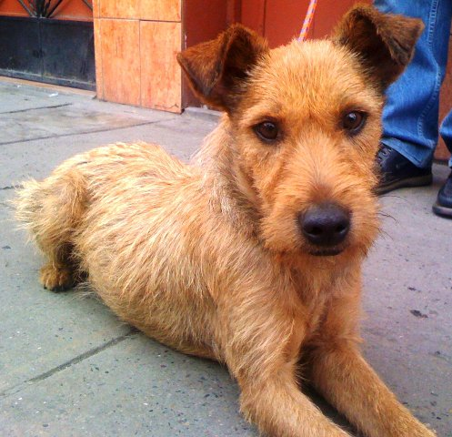

Toggle navigation
Be the change
Baja California Sur
Campañas
Organizaciones
Adopción
Campañas de este mes

Previous
Next
Organizaciones
Humane Society of Cabo San Lucas AC
Cabo San Lucas
Albergue; Adopciones; Rescates de emergencia; Programas educativos
Beth Schoell – Atención Telefónica (624) 143-5016 (Iglés)
Judith Ubaldi - Tesorera - (624) 143-3947
Gerente General Evaristo Castro 6241298346 (bilingue)
Subgerente Cecilia Montano 6241516046 (solo espanol)
Presidente Aida Trujillo 6241515842 (bilingue)
C.A.R.E. Albergue
Cabo San Lucas
www.petfinder.org/shelters/MX08.html
mexipup@aol.com
Teléfono: 52 624 130 3171
Fundación YO AMO A MI MASCOTA MÉXICO AC
La Paz
Somos una fundación que busca darles una segunda oportunidad a las mascotas callejeras, mediante rescate, atención y adopción de las mismas mediante nuestros distintos medios de difusión.
amoamimascota.org
yoamoamimascotamexico@hotmail.com
Paola Muñoz Cel: 612-15-1-90-92
Erika Alamillo Cel: 612-16-1-42-74
Anuncios independientes
Tambien puedes adoptar en las paginas de las organizaciones
Firulais
Edad aprox. 8 meses
Ciudad.
Contacto:
email@correo.com
Telefono: 43895893
Dona
Edad aprox. 5 años
Ciudad.
Contacto:
email@correo.com
Telefono: 43895893

Bola de nieve
Edad aprox. 3 años
Ciudad.
Contacto:
email@correo.com
Telefono: 43895893